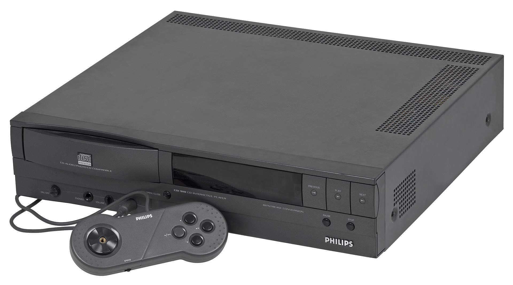

The JVC X'Eye was created as a collaboration between JVC and Sega. The console itself is a Sega Genesis and a Sega CD put together in a form that was smaller than just having both systems and also only needed one AC adapter. On top of the combination, you could get a modification to the console to play 32X games until 2014, however you can still fit a regular 32X into the console with almost issue. This sounds like a great deal, however the console's high release price of $499 was something that turned away many consumers, not to mention that the Sega CD itself wasn't having the best sales on its own. The console itself is decently rare as only around 500,000 units were created before they were discontinued only a few months after first release. Despite what it may seem however, the console is genuinely a good buy as there are some gems in the Sega CD library and the CD drive on the X'Eye is better than the standard Sega CD console, making the sluggish CD format run much faster and more reliably
Philips CD-i - The Broken Fragments of Collaboration
Kyle Burnham

The Philips CD-i was a console released in 1991 that case the result of a failed collaboration between Nintendo and Philips. The console was meant to take advantage of the more powerful CD-ROM format which was gaining popularity in the game scene at the time. The system was marketed as a Home Entertainment System and had multimedia features like being able to play movies and regular audio CDs. The system was also one of the earlier consoles that could natively use the internet. Despite all that it offers, the console did not deliver well in the gaming scene as these days it is notorious for certain games in its library, namely Hotel Mario, The Legend of Zelda: The Wand of Gamelon, and Link: The Faces of Evil. Many who play those games say that they play terribly and the controllers are worse, however they work well enough for point and click games.
Sales of the CD-i compared to other consoles at the time:
Console
Release Date
Lifetime Sales
Super Nintendo Entertainment System
23.35 million units in North America, 49.1 million units Worldwide
Sega Genesis
30.75 million units
Sega CD
2.24 million units
Philips CD-i
400,000 units
The Philips CD-i also had many models and revisions over its life cycle, some by Philips themselves and some by other companies. The console also had a very high starting price of $799 which was a hard sell for most consumers and thus, in 1998, the console was discontinued, only to live again through memes and collectors